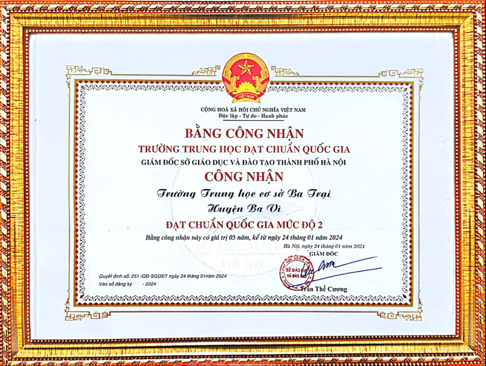

Lịch sử và Sứ mệnh
Trường THCS Ba Trại được thành lập từ năm 1963, là một trong những cơ sở giáo dục uy tín của huyện Ba Vì, Hà Nội. Trường có sứ mệnh đào tạo học sinh phát triển toàn diện về trí tuệ, thể chất, đạo đức và kỹ năng sống.
Thông tin chung
- Địa chỉ: Thôn 5, xã Ba Trại, huyện Ba Vì, TP Hà Nội
- Email: dcc.id.vn
- Hiệu trưởng: Thầy Nguyễn Ngọc Đại
- Diện tích: 15.000 m² với 29 lớp học
- Trang thiết bị: Máy chiếu, máy tính, phòng thực hành hiện đại
Thành tích tiêu biểu
Trường được công nhận là Trường chuẩn Quốc gia từ năm 2017. Trong năm học gần nhất, học sinh đạt nhiều giải cao trong các kỳ thi cấp huyện và thành phố, bao gồm:
- 1 Huy chương vàng và 1 Huy chương đồng điền kinh cấp thành phố
- 39 giải học sinh giỏi cấp huyện
- Nhiều năm đạt danh hiệu “Tập thể lao động tiên tiến”
